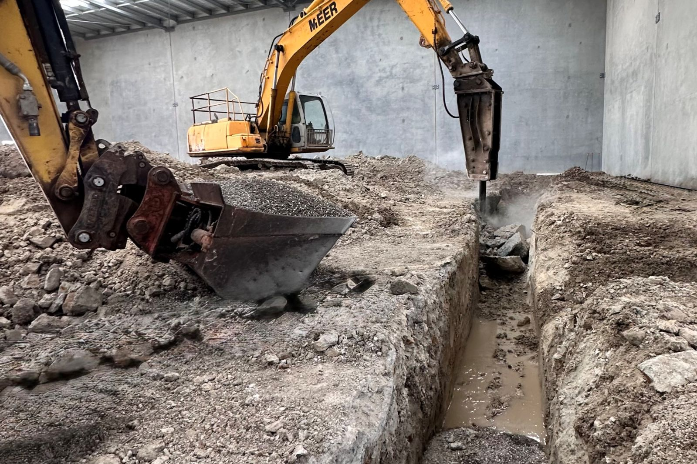
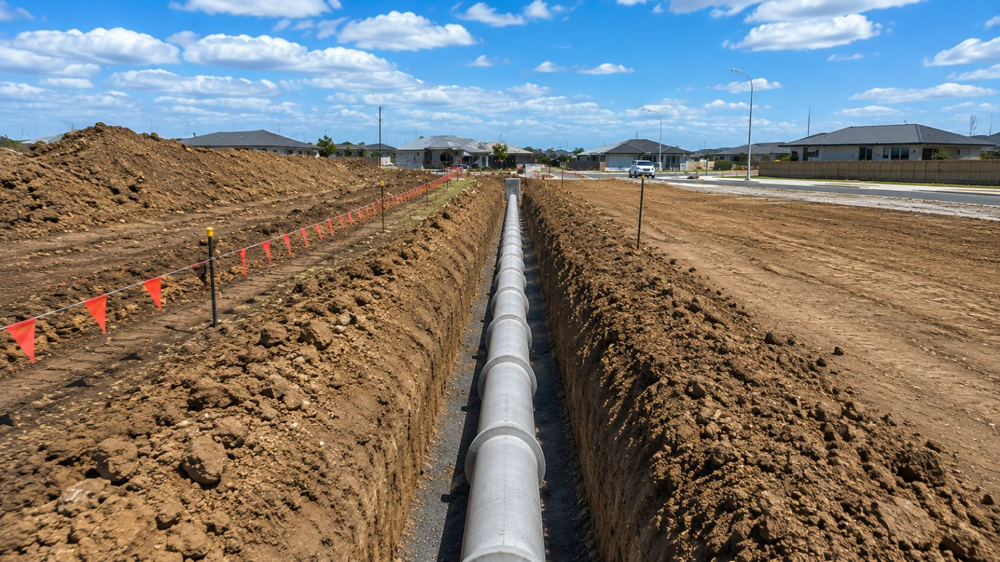
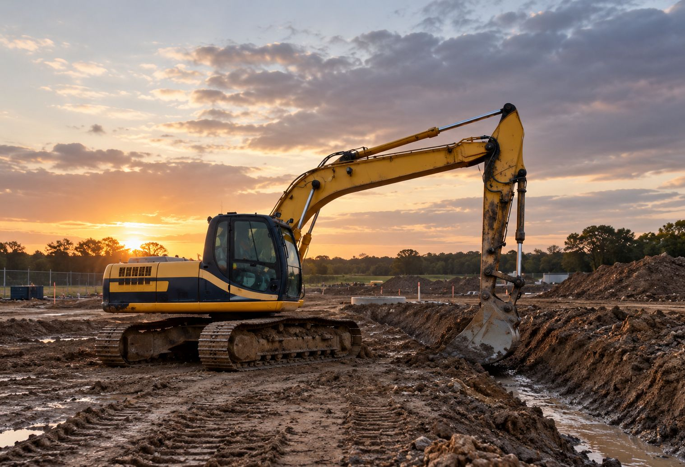

Plumbing
Hydraulic services for new residential homes, multi-residential developments, townhouse complexes, and commercial and industrial buildings, from site establishment through to final connections and commissioning.
Plumbing services
Built on people. Driven by performance.
From the plumbing in a new build to the mains under the street. One team, from site establishment through to final connections and commissioning.
Get in touchWhat we do
Hydraulic services for new residential homes, multi-residential developments, townhouse complexes, and commercial and industrial buildings, from site establishment through to final connections and commissioning.
Plumbing services
Live sewer, water and stormwater works within the Urban Utilities network and across the Brisbane City Council region, plus earthworks, underground services, roadworks and stormwater drainage.
Civil servicesWhen the plumbing and the civil sit with Apex, there is one program, one set of crews and one point of responsibility. Fewer gaps between trades, and far fewer surprises for the builder.

Recent work
Finished work and jobs in progress across South East Queensland.
Hydraulic services and fit-off on new residential and multi-residential builds.
Earthworks, drainage and underground services on commercial and industrial sites.
Builders we work for
Send us the scope and we’ll come back to you.